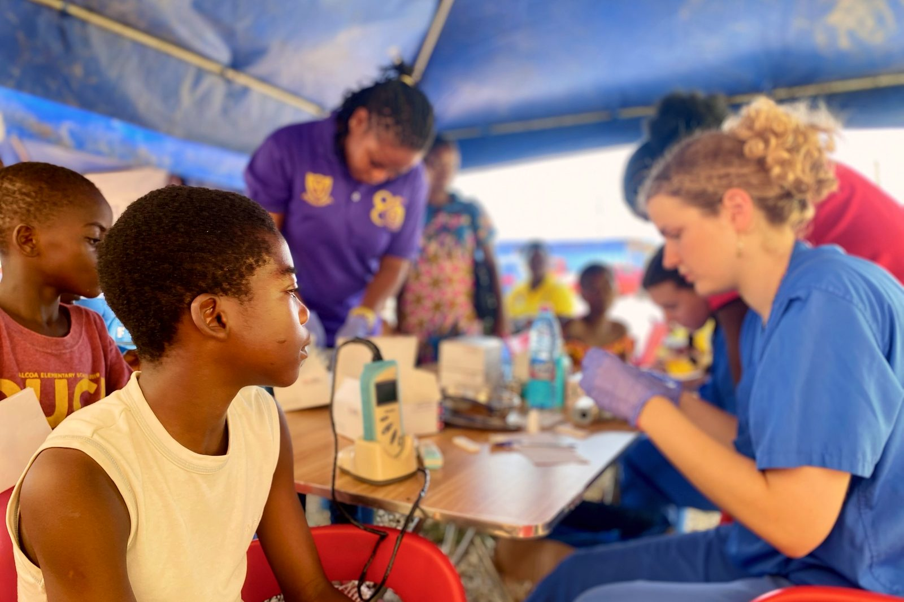

Betreute klinische Rotationen an Partnerkrankenhäusern in Ghana.
Rotiere durch die Stationen am Cape Coast Teaching Hospital — als Teil des Teams um Dr Ernest K. Ainooson, mit direktem Einblick in Tropenmedizin und in Realitäten der Gesundheitsversorgung, die dir zu Hause kaum begegnen. Du beobachtest, du assistierst, du wächst — immer im Rahmen deiner Ausbildung und immer betreut.

Lernen an der Seite derjenigen, die die Station führen.
Während der Rotation steigst du in den Alltag der Stationen ein — Morgenvisite, ambulante Sprechstunden und Bedside-Teaching — als Teil von Dr Ainoosons Assistenzarzt-Team. Die einheimischen Klinikerinnen und Kliniker sind die Fachleute und führen den Betrieb; du bist hier, um von ihrer Arbeit zu lernen und im Rahmen deiner Ausbildung beizutragen.
Sechs Fachrichtungen, passend zu den Stationen, die sie vermitteln.
Innere & Allgemeinmedizin
Visiten, ambulante Sprechstunden und ein echter Einstieg in Tropen- und Infektionskrankheiten.
Pflege & Stationsbetreuung
Arbeite Seite an Seite mit erfahrenen Pflegekräften auf internistischen, chirurgischen und geburtshilflichen Stationen.
Pharmazie & Arzneimittelversorgung
Krankenhaus- und Offizinpharmazie, die Realität der Versorgungslage und Antibiotic Stewardship im Kontext.
Psychologie & psychische Gesundheit
Gemeindenahe psychische Gesundheitsarbeit und die kulturellen Dimensionen von Versorgung und Stigma.
Physiotherapie & Reha
Rehabilitation, muskuloskelettale und neurologische Fälle mit dem Erfindungsgeist begrenzter Ressourcen.
Gesundheitswissenschaften & Public Health
Labor, Hebammenwesen und Public-Health-Einsätze entlang der zentralen Küste.
Praxisnah heißt immer betreut — und immer im Rahmen deiner Ausbildung.
Einheimische Klinikerinnen und Kliniker leiten jede Rotation. Du lernst, indem du unter ihrer Anleitung beobachtest und assistierst — nie, indem du unbeaufsichtigt oder über deine Kompetenz hinaus arbeitest. Genau das hält den Austausch sicher für die Patientinnen und Patienten und wertvoll für dich, und darüber lässt sich nicht verhandeln.
Ein Lehrkrankenhaus an der Küste.
Einmal im Monat kommt die Station ins Dorf.
Einmal im Monat veranstaltet das Team eine Free Clinic, eine kostenlose Gesundheits-Sprechstunde in den umliegenden Dörfern — Blutdruck- und Blutzuckermessung, einfache Konsultationen und Gesundheitsaufklärung, gebracht zu Menschen, die sonst weit dafür reisen müssten. Für Studierende ist es einer der klarsten Einblicke in Public Health und Prävention an der Küste — und eine Gelegenheit, als Teil des größeren Teams mitzuarbeiten.
Wie das übrige Programm wird die Free Clinic von einheimischen Klinikerinnen und Klinikern geleitet und beruht auf Partnerschaft und gegenseitigem Lernen — nie auf Wohltätigkeit.
